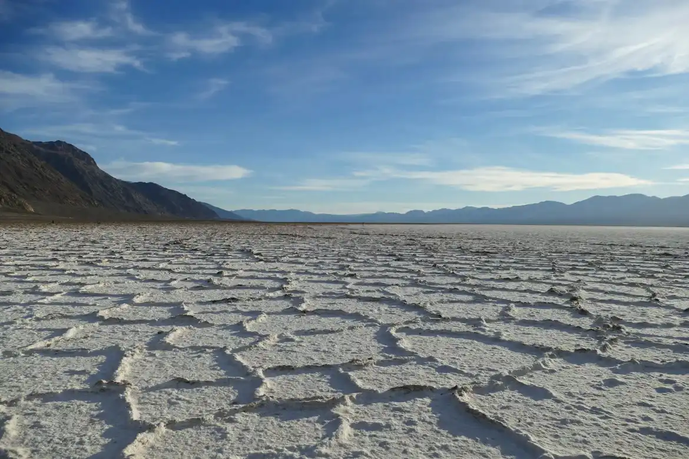

Data
Area: 10,582 sq km
Elevation: 3,650 m above sea level
Location: Potosí, Bolivia
Province: Daniel Campos
Country: Bolivia
Type: Salt flat (Salar)
Salt reserves: 10 billion tons
Lithium reserves: 70% of world's lithium
Weather
Temperature: 10 °C
Conditions: Partly Cloudy
Wind: 5 km/h
Wind Chill: N/A